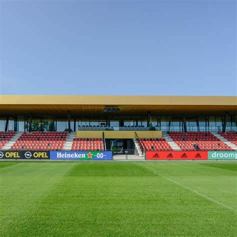

Korte inhoud
Feyenoord Rotterdam
Is een Nederlandse profvoetbalclub uit Rotterdam, opgericht op 19 juli 1908, die uitkomt in de Eredivisie. De
stadionclub wordt vaak betiteld als de club van het volk. De thuisbasis is Stadion Feijenoord, dat in de
volksmond De Kuip wordt genoemd. De traditionele uitrusting van Feyenoord bestaat uit een rood-wit shirt met een
zwarte broek en dito kousen. De voetbalclub is een van de drie traditionele topclubs in Nederland.
Feyenoord won vijftien keer het landskampioenschap, dertien keer de KNVB beker, een keer de Europacup I, twee
keer de UEFA Cup en een keer de wereldbeker. Mede doordat Feyenoord in 1970 als eerste Nederlandse club
internationaal een grote prijs won, speelt zij historisch gezien een vooraanstaande rol in het Nederlandse
voetbal. Op de UEFA-ranglijst van beste clubs in Europa stond Feyenoord op 12 november 2022 op de 34e plaats met
een totaal van 45.000 punten, Zie hier
Feyenoord was altijd de eerste van Nederland met winnen: eerste Europa Cup I, eerste Wereldbeker voor clubs,
eerste UEFA Cup. Maar Feyenoord was niet zo heel vaak de beste.
Het legioen zingt, scheldt, hunkert, toont zelfspot en trouw. Het cultiveert het eigen lijden, want Feyenoord
wint nooit gemakkelijk. Maar dat hoeft ook helemaal niet voor een club die zich gaarne afficheert met het
stadsmotto 'sterker door strijd'. Moeilijk winnen, en niet zo vaak, is zeker zo mooi als veel winnen. Feyenoord
won in deze eeuw de UEFA Cup in 2002 en de KNVB-beker in 2008 en 2016, maar nooit het kampioenschap. Tot 2017.
feyenoord wordt sinds de oprichting van de vereniging gekenmerkt als volksclub. Iedereen kon lid worden van de vereniging in tegenstelling tot bij veel van de gevestigde clubs uit die tijd die een strikte ballotageprocedure hanteerde, zoals stadsgenoot Sparta Rotterdam. Zo vertegenwoordigden de clubleden in de jaren 30 van de 20e eeuw verschillende lagen van de samenlevering, van werklozen tot café-eigenaren, accountants en directeuren. Desalnietemin waren destijds de arbeiders oververtegenwoordigd in Rotterdam-Zuid. Zij werkten veelal in de haven van Rotterdam, hadden weinig tijd en middelen voor ontspanning en waren minder welkom bij eliteclubs als Sparta. Zodoende werd Feyenoord voor vele bewoners van Zuid een uitvlucht en won de club snel aan grote populariteit. Net als het volkse karakter is de thuisstad Rotterdam nauw verbonden aan de identiteit van de club, waarbij met name de mentaliteit van harde werkers wordt uitgelicht. Deze mentaliteit vindt haar oorsprong in de haven, maar na de Tweede Wereldoorlog wordt deze mentaliteit verder bekrachtigd als de stad opnieuw opgebouwd moet worden onder het motto Sterker door strijd. Zodoende werden waarden als kracht, werklust en loyaliteit verankert in de identiteit van de club. Dit is in de loop der jaren verder versterkt met het bekende geen woorden maar daden uit het clublied en uitspraken als Kein geloel, fussbal spielen van oud-trainer Ernst Happel. Ook voor het Feyenoord van de 21e eeuw worden deze waarden veelvuldig gebruikt om de voetbalvisie te typeren
Feyenoord Academy is gevestigd op Varkenoord. In de zomer van 2019 opende het gloednieuwe, multifunctionele, moderne trainingscomplex. Op Varkenoord werken dagelijks alle jeugdelftallen van Feyenoord in een topsportklimaat hard aan de doelstelling om elke dag beter te worden.
Niet voor niet is Feyenoord Academy tot en met het seizoen 2013-2014 vijf keer op rij onderscheiden met de Rinus Michels Award, de prijs voor beste jeugdopleiding van Nederland. Deze erkenning van de KNVB en de hoofden van de profopleidingen in Nederland betekent voor alle trainers en overige medewerkers van Feyenoord Academy een stimulans om verder te gaan op de ingeslagen weg en de jeugdopleiding een nóg groter succes te maken. In een hecht team bieden zij de talenten binnen de jeugdopleiding de ideale omstandigheden en een optimaal klimaat om zich te ontwikkelen tot een speler van Feyenoord 1.